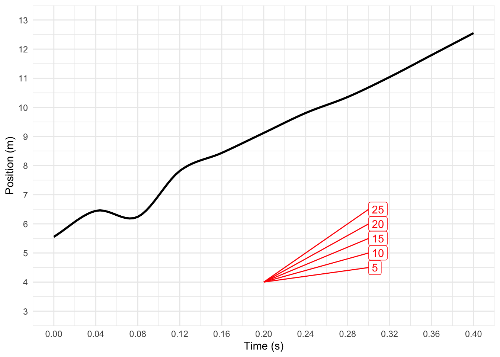
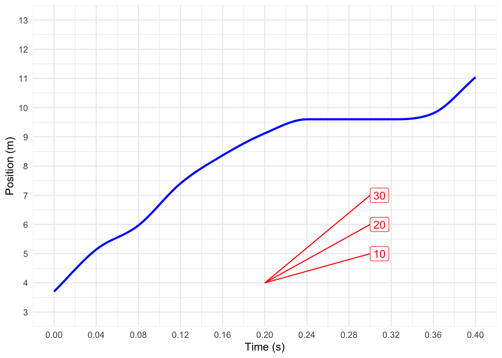

Quantitative Argumentation
Chapter 14 Reading Questions
No answers yet collected
Exercise 1 The series of images of “The Horse in Motion,” made by Eadweard Muybridge in 1878, was one of the first stop-action, multi-frame photographs. There are 11 successive frames, each separated by 0.04 seconds. (The last frame is out of sequence, so ignore it for our purposes.) The vertical lines are separated by 27 inches. The whole set of frames, from 1 to 11, covers approximately one-half stride cycle of the horse.

We are going to look at the rate of change of the horse’s position with respect to time. Of course, “rate of change of position with respect to time” is more commonly known as velocity. And, evidently, different parts of the horse are moving with different velocities at different times.
To start, make measurements from the photos of two parts of the horse: the tip of the nose and the center of one of the front hooves. Which hoof? The one that is not in contact with the ground in frame 1 and is being pulled behind a bent knee in frame 2. (Note that to see the hoof is being pulled, you might need to refer to frame 3. Simple dynamical phenomena play out over extended time.)
The following is a text-entry box that will be submitted along with your other answers. Questions (1) - (3) below are to get you started filling in the velocity columns of the table.
- What is the change in nose position from frame 1 to frame 2?
- What is the rate of change of nose position with respect to time from frame 1 to frame 2?
- What is the rate of change in hoof position with respect to time from frame 1 to frame 2?
Consider this phrase: “The rate of change in hoof position with respect to nose position.” Calculate it, then explain how the value is related to the values from (2) and (3).
Do similar calculations as in (2) and (3), but go backwards: from frame 2 to frame 1. Do your results have an evident relationship to the values you calculated in (2) and (3).
Fill in the velocity columns for ?@tbl-nose-hoof for all ten pairs of successive frames. As you do so, contemplate this question: for the rates of change from frame n to n+1, should you enter the values on line n or line n+1 or something different? Would either be valid? Both? We just want to hear what you’re thinking about this, not that there is a right answer.
- Imagine that your answer to the previous question was “both.” You would then have two different velocities to enter on each line of the table. But the horse’s nose cannot have two different velocities at the same time. This is a genuine problem. In Chapter 14 the word “instantaneous” is associated with the conceptual resolution of this problem. Explain the connection between “instantaneous” and the resolution of the riddle in (6).
- A high-speed, high-resolution video camera can cover the same time span as covered in Muybridge’s photo with thousands of successive frames rather than just eleven. How might such data make the question of where to place each velocity data point practically of no consequence.
Figure 1 shows a model of the position of the nose and hoof as they vary continuously in time. The graphs are annotated with sloping lines where the unit of the slope is m/s.


Copy over one of the graphs (approximate is OK) to a piece of paper. Annotate the graph with:
- Points and a sloping line connecting them that correspond to the velocity calculation between frames 3 and 4 (that is, time 0.08 to 0.12 s).
- Points and a sloping line connecting them that correspond to the overall velocity over the interval from time zero to time 0.40 s
- The instant when the velocity is highest.
The {devoirs} homework collection system doesn’t handle pictures, but bring your annotated graph to class for discussion purposes.
Exercise 2 AI generated in response to a prompt about “fuel economy” versus “fuel consumption.”
This is a fantastic topic for our quantitative reasoning course because it highlights how different cultures choose different units to represent the same concept—and how those choices change the math.
In the United States, we use Fuel Efficiency (Distance/Volume), while in Europe and much of the world, they use Fuel Consumption (Volume/Distance).
Scenario: You are comparing two rental cars for a road trip.
The American Model: Rated at 30 miles per gallon (mpg).
The European Model: Rated at 8 liters per 100 kilometers (L/100km).
To compare them, you need to convert the European rating into “American” units. Use the following conversion factors:
- 1 gallon ≈ 3.8 liters
- 100 kilometers ≈ 62 miles
Question: What is the approximate fuel efficiency of the European model in miles per gallon, and which car is more “efficient” (uses less fuel per mile)?
bbg-1-cfr
TipAnswer
To compare two quantities, they must have the same dimension. The dimension of miles-per-gallon is L / L3 = L-2. The dimension of “liters per 100 km” is L3 / L = L^2$. So we can’t directly compare the two cars.
Nonetheless, it is straightforward to calculate the miles-per-gallon of the European car. The car consumes 8 liters in order to go 100 km. The problem statement told us that 100 km = 62 miles. But how many gallons are their in eight liters? We need a conversion factor from liters to gallons. The conversion factor will be a flavor of 1 with gallons on top and liters on the bottom. Since 1 gallon ≈ 3.8 liters, we divide 1 gallon by 3.8 liters; the conversion factor is \[\frac{1\, \text{gallon} }{3.8\, \text{liters}} = 0.263\, \text{gallons per litre} .\]
Converting 8 liters to gallons is a simple matter of multiplying by the conversion factor: \[8\, \text{liters} \times 0.263\, \frac{\text{gallons}}{\text{litre}} = 2.112\, \text{gallons}\] To find the miles-per-gallon, divide the distance by the fuel used, that is \[62\, \text{miles} / 2.112\, \text{gallons} \approx 29.5\, \text{mpg} .\]
..id..
Exercise 3 Light bulbs generally have a quantity printed on them: the wattage. Similarly, light-bulb sockets often have a “max watts” label advising the user of the largest wattage bulb that can work safely in the socket.
- Part a
- What is the dimension of a watt?
bulb-wattage
TipAnswer
Since people don’t directly perceive electrical current or voltage, it is hard to form an intuition about them. Instead, training is required to interpret properly the meanings of electrical dimensions.
An exact mathematical analogy to electrical dimensions can be made to water and flow. You turn on the shower and step in for four minutes. As you shower, at each instant you can feel the “intensity” (flow) of the spray from the shower-head. You even have a faucet to set the flow. This flow is analogous to the power used by a light bulb.
Over the full course of your 4-minute shower, six gallons of water goes down the train. Gallons, of course, have the dimension of volume. You used those six gallons over four minutes. Consequently, the flow of water is \(\frac{6\, \text{gallons}}{4\, \text{minutes}} = 1.5\, \text{gallons per minute}\). The volume of water used in your shower session is analogous to the energy used by a light bulb: it is power multiplied by duration. ..id..
- Part b
- The brightness of the light emitted by a light bulb is proportional to power. Suppose you turn on a 20-watt light when you walk into a room. This consumes energy. The energy used by the bulb is the power multiplied by the duration that the light was on.
- If you stay in the room for 1 hour, turning off the light when you leave, how much energy has the light consumed?
light-bulb-b1
- In terms of the fundamental dimensions—L, M, T—energy has dimension L2 M T-2. What is the dimension of power?
light-bulb-b2
- You might reasonably ask, “What does mass have to do with energy?” Perhaps you remember Einstein’s famous equation for energy: \[E = m\, c^2\] where \(m\) is mass and \(c\) is the speed of light. What is the dimension of \(c^2\)?
light-bulb-b3
Consequently, \(m\, c^2\) has the dimension of energy.
- Part c
- Consider this statement:
light-bulb-c1Power consumption is a property of the light bulb, but energy consumption involves both the light bulb itself and the pattern of usage.
- Part d
- A typical household uses about 10 kilowatt-hours of energy per day. “10 kilowatt-hours” is an amount of energy, but “energy per day” is a flow of energy, that is, a power.
- Translate “10 kilowatt-hours of energy per day” into the equivalent watts. For simplicity in the calculation, assume that the energy is used evenly over the 24-hour day.
light-bulb-d1
- Look up the power consumption of a hand-held blow-dryer. When the blow-dryer is in use, energy consumption of the household increases. Which of these is a plausible fraction of average household power consumed by the hair-dryer?
light-bulb-d2